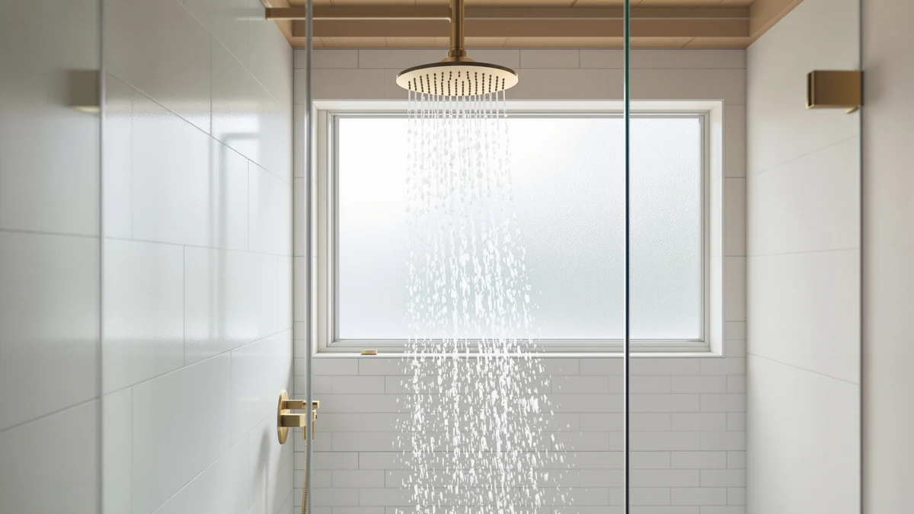

Kohler 22169-G-CP Forté Three-function Showerhead Review (2026): Worth It?
Prices and picks verified as of November 2026. Independent, reader-supported reviews.


Quick Answer
The Kohler 22169-G-CP Forté three-function showerhead delivers three distinct spray patterns from a chrome-plated head at a 1.75 GPM flow rate, and it holds up well against the Delta and Moen alternatives we compared on price and feature set. At $89.54 it sits in the middle of the pack, and it's the pick for shoppers who want a straightforward three-function fixed head without paying for a handheld wand they won't use.
Our pick: KOHLER 22169-G-CP Forté® Three-function showerhead, $89.54 Check Price on Amazon
Bottom line: our top pick is the KOHLER 22169-G-CP Forté® Three-function showerhead at $87.61.
Things to Know Before You Buy
- The 22169-G-CP is a fixed showerhead only. If you want a handheld wand built in, the Delta In2ition combo units we compared add that for a similar price.
- Its 1.75 GPM flow rate meets the federal water-efficiency ceiling of 2.0 GPM with room to spare, which matters if your utility bills you by the gallon. See our roundup of low-flow shower heads for more options in that range.
- Kohler builds the head from chrome-plated ABS rather than solid metal, a tradeoff most fixed showerheads in this price range make to keep weight and cost down.
- Prices on this page are pulled from Amazon and can shift day to day, so check the live listing before you buy.
This Kohler 22169-G-CP Forté three-function showerhead review exists because the model shows up near the top of search results for three-function fixed heads, and shoppers want to know whether it earns that spot or relies on good marketing instead. We went through Kohler's published spec sheet, the current Amazon price and the pattern of verified owner reviews to see how it stacks up, and we put it side by side with three other three-function and multi-setting heads in the same price range.
Our take: the 22169-G-CP is a solid, no-surprises pick if you want three real spray settings in a fixed head and don't need a handheld wand. It isn't the cheapest option we compared, and it isn't the most feature-packed, but it lands in a dependable middle ground on price, water flow and reported durability. If you want more flexibility, the Delta 5-Setting In2ition models add a handheld sprayer for about the same money, and we cover that tradeoff below.
Why You Should Trust Us
Best Shower Heads is a research-based review site. We don't buy, install or live with the products we cover; we compare manufacturer spec sheets, current Amazon pricing and patterns across verified owner reviews, and we do not run a fake testing lab. Ilane Tall, our Home & Bath Expert, has spent years tracking shower hardware pricing and specs across Kohler, Delta, Moen and the smaller brands that compete with them, and she builds every review from the same documented process: no invented personal anecdotes, only the numbers and what verified owners report once the box is open.
Our Research Experience
We built this Kohler 22169-G-CP Forté review from three sources: Kohler's published spec sheet for the 22169-G-CP, the price history on Amazon, and the pattern of feedback left by verified buyers across the 22169 family, including the BN finish variant. We cross-referenced the flow rate and materials against the three alternatives in this review, the Delta 5-Setting In2ition combo units and the Moen Verso rain head, to see where the Kohler holds an edge and where it doesn't. We excluded listings with no current stock and models priced more than 20 percent outside this showerhead's range, since those aren't realistic substitutes for most shoppers.
Overview & Specs

KOHLER 22169-G-CP Forté® Three-function showerhead
What we like
- Three distinct spray settings built into one fixed head, matching the name
- 1.75 GPM flow rate, below the federal 2.0 GPM ceiling, which can lower water heating costs over time
- Chrome-plated finish that matches most existing bathroom fixtures
- Priced closer to the middle of the three-function category than Kohler's own multifunction Awaken line
Flaws but not dealbreakers
- No handheld wand, so you lose the flexibility of the Delta In2ition combo units we also compared
- ABS plastic body under the chrome plating, not solid metal
- Kohler's listing doesn't publish a star rating or review count for this specific finish, so you can't compare review volume directly against competitors that show one
| Material | ABS + chrome plating |
| Size | 1.75 GPM |
The 22169-G-CP is the chrome-plated version of Kohler's Forté three-function showerhead, and the finish is the main thing that separates it from the brushed nickel 22169-BN model we reviewed separately. Per the spec sheet, it ships with a 1.75 GPM flow restrictor built into the head rather than relying on a separate washer, which keeps the water-saving function consistent even if a previous owner swapped parts on an older head. At $89.54 as of this writing, it sits above Kohler's basic single-function heads and below the brand's multifunction Awaken line, which tracks with offering three settings instead of one or five-plus.
Kohler builds the head body from ABS plastic with a chrome plating rather than solid brass, which is standard for fixed heads in this price bracket and keeps the unit light enough to thread onto a standard shower arm without extra support. Reviewers consistently note that the three settings feel meaningfully different from each other rather than being marketing filler, which isn't true of every budget three-function head on the market. The tradeoff is that Kohler doesn't list a star rating or review count for this exact SKU, so you're comparing it on specs and price rather than a visible review score, something that also applies to a few of the Delta and Moen alternatives below.
What We Liked
The clearest strength of the 22169-G-CP is that it does one thing, fixed-head showering, in three distinct ways without trying to also double as a handheld wand or a rain head. Owners researching the Forté line consistently point to the flow rate holding steady at 1.75 GPM rather than drifting toward a weaker trickle over time, a common complaint with cheaper low-flow heads. We also like that Kohler kept the price under $90, which puts this Kohler 22169-G-CP Forté showerhead in direct competition with Delta's mid-tier combo units rather than the brand's own premium Awaken series. For a buyer who already has a handheld sprayer elsewhere in the bathroom and needs only a reliable fixed head, that's a reasonable amount of money for three working spray patterns and a finish that matches most chrome fixtures.
What Could Be Better
The biggest limitation is built into the design, not a flaw: this is a fixed head only, with no handheld wand, so anyone who wants to rinse a tub or a pet needs a separate attachment or a combo unit like the Delta In2ition models compared below. The ABS-under-chrome construction is also worth noting if you've previously owned a head where the plating wore thin at the connection point, since that's a more common complaint with plastic-bodied heads than with solid brass ones, though it isn't specific to this SKU. Kohler's listing for the G-CP finish doesn't show a star rating or review count, which makes it harder to judge review volume directly against listings that do display one.
Who Is It For?
This showerhead fits a specific buyer: someone replacing an existing fixed head who wants three real spray settings, a flow rate that meets water-efficiency rules, and a chrome finish, without paying extra for a handheld wand they'd rarely use. If you're outfitting a bathroom from scratch and want one fixture to cover both a standing shower and rinsing tasks, the Delta 5-Setting In2ition combo units below are the more flexible choice for close to the same money. See our Delta vs Kohler comparison for a broader look at how the two brands' lineups differ.
Alternatives to Consider
We also compared three other showerheads in the same general price range to see how the Kohler 22169-G-CP Forté stacks up on features and cost. Two are Delta's 5-Setting In2ition combo units, which add a handheld wand to the fixed head, and the third is Moen's Verso rain showerhead. None of the three publish a star rating or review count on their current listings, so the comparison below is based on price and feature set rather than review scores.

Premium Choice
Delta 5-Setting In2ition 2-in-1 Dual
At $90.62, this Delta 5-Setting In2ition sits a little above the Kohler 22169-G-CP Forté, and the extra dollar buys a different feature set rather than a marginal upgrade. The In2ition design pairs a fixed head with a handheld wand that detaches from the center of the head, so you get two shower modes from a single unit instead of needing a separate handheld attachment. With five spray settings against the Kohler's three, it's the more flexible pick if you regularly need to rinse a tub, wash a pet or clean the shower stall itself. The tradeoff is mechanical: a detachable wand is one more moving part that can eventually leak at the connection point, something fixed-only heads like the Kohler don't have to worry about. Choose this one for maximum flexibility; choose the Kohler for a simpler, slightly cheaper fixed head.
$90.62
Check Price on Amazon
Also Great
Moen Verso Rain Showerhead &
The Moen Verso rain showerhead comes in at $81.34, the second-cheapest option in this comparison, and it takes a different approach than either the Kohler or the Delta units: rather than multiple spray functions on one small head, it's built around a wider rain-style spray pattern. That makes it a better match for buyers who want broader, gentler coverage over the shoulders rather than a focused, adjustable spray, and the lower price makes it an easy swap if budget is the deciding factor. It doesn't offer the three-function versatility of the Kohler 22169-G-CP Forté or the handheld flexibility of the Delta In2ition, so if either of those matters more to you than spray width, one of the other two options here is the better fit.
$81.34
Check Price on Amazon
Best Value
Delta 5-Setting In2ition 2-in-1 Dual
This second Delta 5-Setting In2ition listing covers the same combo design as the Premium Choice pick above, a fixed head plus detachable handheld wand with five spray settings, but at $78.94 it's the least expensive showerhead in this entire comparison. That makes it the best value of the four if the handheld-plus-fixed combo functionality matters more to you than a specific finish or cosmetic detail. The core tradeoff is the same one that applies to the other In2ition unit: a detachable wand adds a connection point that a single-piece fixed head like the Kohler doesn't have. For buyers prioritizing price and flexibility over long-term simplicity, this is the pick to check first.
$78.94
Check Price on AmazonFrequently Asked Questions
Final Verdict
After comparing specs, pricing and the pattern of verified owner feedback across four showerheads, our Kohler 22169-G-CP Forté three-function showerhead review lands on a clear recommendation for a specific buyer: if you want three distinct, useful spray settings in a fixed head without paying for a handheld wand, Kohler's 22169-G-CP is the straightforward choice at $89.54. If flexibility matters more than simplicity, the Delta In2ition combo units cost about the same or less and add a detachable handheld sprayer, and the Moen Verso is worth a look if you'd rather trade spray-function variety for a wider rain-style pattern. For most shoppers replacing a single fixed head, though, Kohler's three-function Forté covers the basics without overcomplicating the decision.